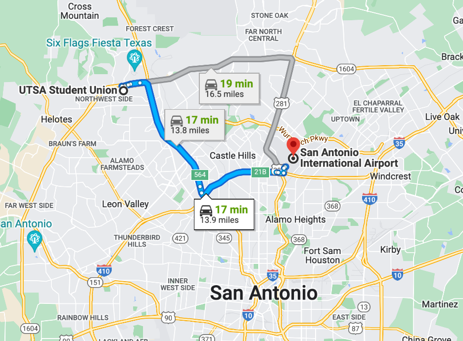

Travel and VISA
Student Travel Grants for CPS-IoT Week 2023
With the support from US National Science Foundation (NSF) and ACM Special Interest Group on Embedded Systems (SIGBED), we are pleased to announce the availability of Student Travel Grants for students to attend CPS-IoT Week 2023. Please note there are TWO different Student Travel Grants.
- NSF Student Travel Grants (see the flyer for details), which open to students who are currently attending US-based Universities/institutions.
- SIGBED Student Travel Grants (see the flyer for details), which open to students attending university worldwide.
VISA and Support Letter
If you are an international attendee, you may need a valid VISA to enter USA. Please check the US Department of State for more information.
As part of the VISA application process, you may be required to include a visa support letter. To request a visa support letter, you need to register for the CPS-IoT Week 2023 first, and then email your request to the ACM Headquarters (supportletters@acm.org) with the following information included:
- Your name as it appears in your passport,
- Your current postal mailing address,
- The name of the conference/workshop you plan to attend in CPS-IoT Week 2023,
- If you have any papers accepted for the conferences at the CPS-IoT Week 2023, please provide the title, the conference name, and indicate whether you are the "sole author" or a "co-author",
- Your registration confirmation number.
ACM does not provide letters for transport of vendor or presenter equipment. ACM suggests shipping the materials insured to the conference facility.
Travel to San Antonio and UTSA
San Antonio is served by San Antonio International Airport (SAT) with direct flights from many major cities in US and easy connection flights from many cities in other areas such as European, South America, Australia and Asia.
- Transportation from SAT Airport to UTSA Main Campus (or DoubleTree Hotel)

- Drive to UTSA Main Campus (or DoubleTree Hotel) from Austin/Dallas (north side)
- Follow I-35 S and TX-1604 Loop W to N Loop 1604 W Acc Rd in San Antonio
- Take the exit toward La Cantera Pkwy/Fiesta Texas/Chase Hill Blvd from TX-1604 Loop W.
- Drive to UTSA Main Campus (or DoubleTree Hotel) from Corpus Christi (south side)
- Follow I-37 N; Take exit 142B on the left to merge onto I-35 S
- Keep right at the fork to stay on I-35 S, follow signs for I-10/US-87/Houston/El Paso
- Take exit 156 to merge onto I-10 W/US-87 N toward El Paso
- Continue onto I-10 W/US-87 N
- Take exit 557 toward TX-53/U T S a Blvd/University of Texas at San Antonio
- Drive to UTSA Main Campus (or DoubleTree Hotel) from Houston (east side)
- Follow I-10 W and TX-1604 Loop/N Loop 1604 E to N Loop 1604 W Acc Rd in San Antonio.
- Take the exit toward La Cantera Pkwy/Fiesta Texas/Chase Hill Blvd from TX-1604 Loop/N Loop 1604 W
- Drive to UTSA Main Campus (or DoubleTree Hotel) from El Paso (west side)
- Follow I-10 E to N Loop 1604 W in San Antonio. Take exit 556 A from I-10 E
- Continue on N Loop 1604 W Acc Rd
- Drive to UTSA Main Campus Ximenes Avenue Garage (XAG), Google Map Location : see map below